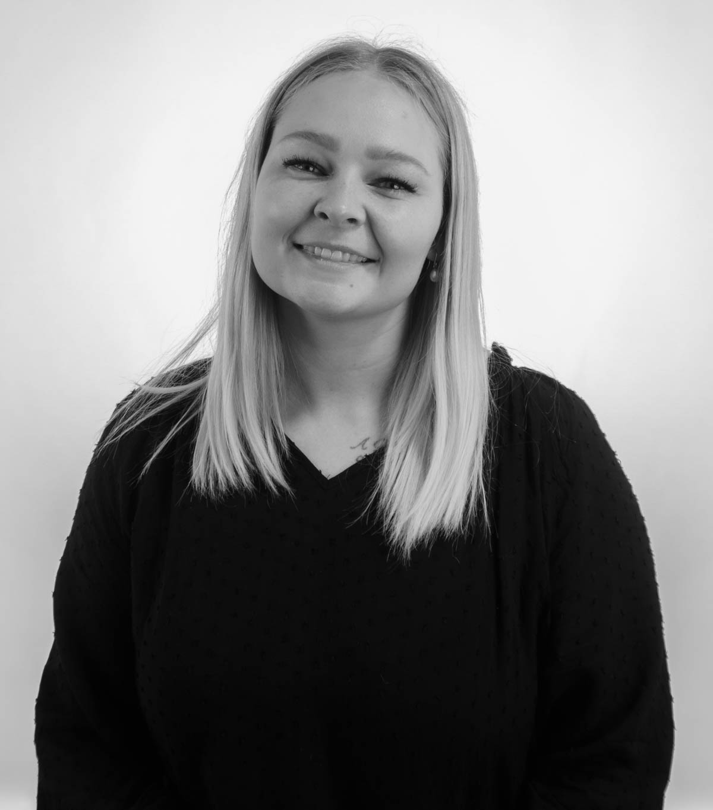
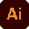

Kamilla S. Østerberg
28 år, bor i Odense med min kæreste.
Til dagligt studerer jeg Multimediedesign på UCL Erhvervsakademi og Profesionshøjskole på 1.semester.
Min interesse for det kreative kom i en forholdsvis sen alder, selvom jeg er vokset op i en meget kreativ familie.
De seneste år har jeg brugt maling til at afkoble og reflektere.
Når jeg ikke studerer, arbejder jeg i Heiko Stumbeck, som optikerassistent.
Her er jeg vandt til at arbejde i et team og have mange bolde i luften på samme tid.
Jeg studerer multimediedesign, da jeg synes der er en masse forskellige muligheder og veje at gå efter
uddannelsen. Mit første interesseområde på 1.semester, har været kodning i HTML & CCS, samt webdesign og illustrationer i Illustrator.
Senere på semestret kom der mere interesse for billeder og video, som jeg glæder mig til at arbejde mere med.
Som person er jeg rolig, udadvendt & perfektionistisk.
Jeg er nysgerrig på at lære nyt og udvikle mig, både personligt og på mine kompetencer.

Kompetencer - Adobe
